Team
セルインタラクティブは一人ひとりが
多様なスキルを持ったクリエイティブチームです。
常に主体的な対話を大切にしています。
-
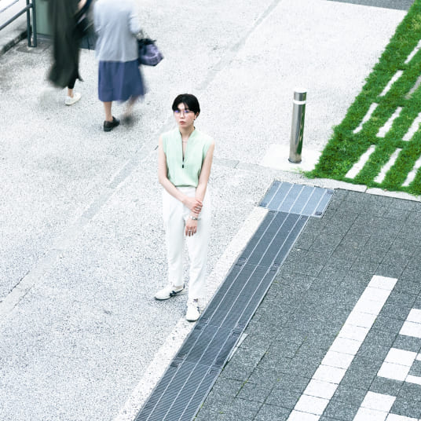 Art DirectorVideographer高橋 花奈変化し続ける世の中に、
デザインの力で何をどのように提供できるか。みなさんと新しい夢や目標に挑戦することで、
常に可能性を広げていきます。私たちはクリエイティブを信じ、
会社や、そこで働く人たちの、
新たな価値を見つけるところからお手伝いします。原点を見失わず、楽しく、美しく、
上質なデザインをできればと思います。 -
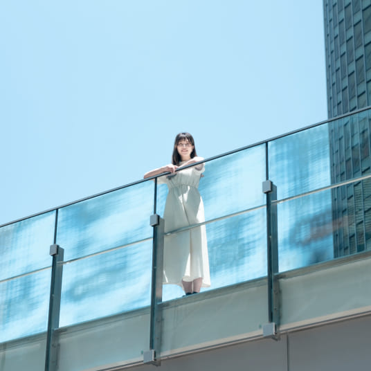 Art DirectorCopywriterIllustrator大塚 未来神奈川県横浜生まれ。中学高校を鎌倉で過ごしました。
武蔵野美術大学にてランドスケープデザインを学び、卒業後はラッピングメーカーで企画・デザイン、EC・SNS運用、オウンドメディアの記事ライティングなどに携わり、セルインタラクティブと出会いました。幼少期から好きだった「絵を描くこと」は私にとって周りを笑顔にする魔法で、その魔法は「大人になったらデザイナーになりたい」という目標に変わりました。
Webデザインは「人の行動をデザインする」ことでもあり、大学時代に学んだランドスケープデザインの本質と近く、強く惹かれました。
豊かな感受性を持って、素直な心で、みなさんの価値を見つけます。クリエイティブを通して、たくさんの人を笑顔にすることができたらと思います。
趣味は美術館めぐり、読書、謎解き、ボドゲ。バイブルは、原田マハの「本日は、お日柄もよく」とエーリッヒフロムの「愛するということ」。
-
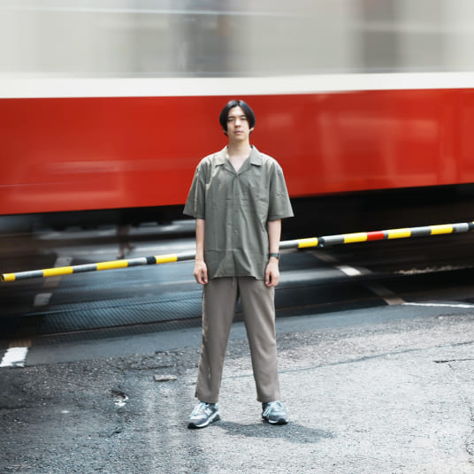 Art DirectorVideographer梶栗 義哉小学生まで日本で過ごし、中学高校と韓国に単身留学。
多摩美術大学統合デザイン学科に入学するため帰国しました。今までの人生の大きな分岐点では、
「楽しい」と「新しい」を基準に選択してきました。常に変化していく世の中で、
柔軟に新しいことを学び、楽しみながら挑戦します。独りよがりにならないよう、
価値を見出し、共感し、
みなさんと手を取り合って、
さらに新しい価値を世の中に
生み出したいと思っています。 -
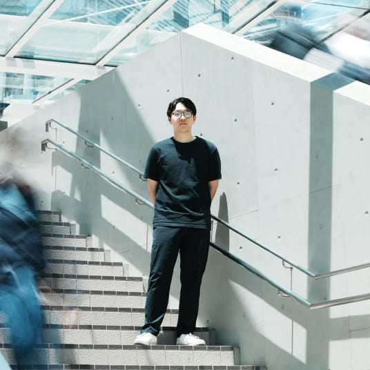 Lead Engineer杉本 将神奈川県生まれ、海の近くで育ちました。
高校生の時に手にしたスマートフォンをきっかけにWebの世界に興味を持ち、Web制作を学びに専門学校へ進学。これまではフロントエンドエンジニアとして、画面の設計や構築を主におこなっていました。
持っている技術や経験を生かし、また別の角度から世の中にクリエイティブな体験と価値を提供していきます。「モノ」を作るエンジニアから「コト」を創るクリエイターになれたらと思っています。
-
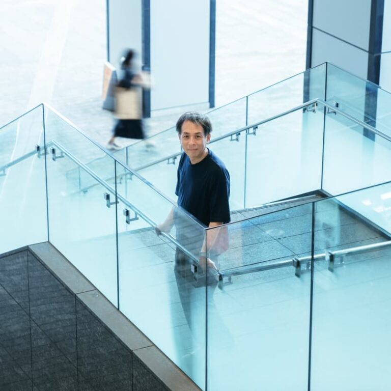 CEO田中 茂裕1985年 横浜生まれ
2008年 法政大学 国際文化学部卒
2010年 多摩美術大学 美術学部 情報芸術コース卒
同年 株式会社セルディビジョン 入社
2019年 株式会社セルインタラクティブ代表取締役就任いつもその時にその人としか生み出せない何かを、ともに創造できることを楽しみにしています。セルインタラクティブは、出会った人々や組織に一気通貫のスタイルで価値あるサービスを提供し、成長へと結びつけます。そして、常に先を見据えながら学び続け、新しい未来に向かってもっと加速していこうと心に決めています。
［雑文］
初めてインターネットに触れたのは小学３年生の夏休み。親のパソコンからロシアのサイトにアクセスして驚いたことが、このデジタルコミュニケーションという領域での原体験だったように思います。行きたいと強く願った世界ならどこへでも行けると信じてやみません。 -
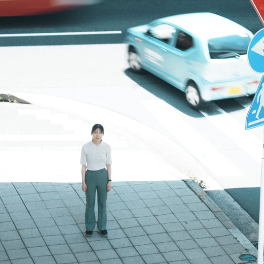 Designer牛谷内 真子石川県民と新潟県民のハーフ。
熊本県と東京都育ち。東京電機大学 理工学部 情報システムデザイン学系 卒
東京デザインプレックス研究所 デジタルコミュニケーションデザイン専攻 修了幼少期は絵を描いたり工作したり、ものづくりに勤しんでいました。パソコンがある家庭だったことも影響し、情報学の道に進みました。
コードを書いて中身を作る楽しさに触れつつ、人が触れる部分もつくりたいと思い、大学卒業後にデザインの勉強を始めました。
エンジニアの目も持つデザイナーとして、様々な感情を生み出せるコンテンツを作っていきたいと思っています。
-
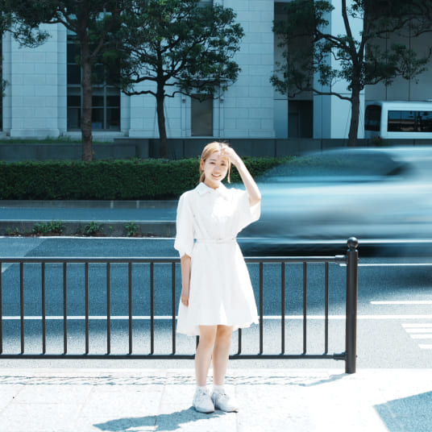 Lead Designer和田 茉梨乃ポートランド州立大学 グラフィックデザイン学部卒
幼い頃から海外文化やアートに興味があり、
辿り着いたのが異文化間コミュニケーションツールとなり得るグラフィックデザインでした。お客さまの価値や情熱を、ブランディングデザインを通してより多くの方に広めるお手伝いをします。
求められているものに正確に、且つワクワクをお届けするクリエイターになれるよう日々尽力してまいります。 -
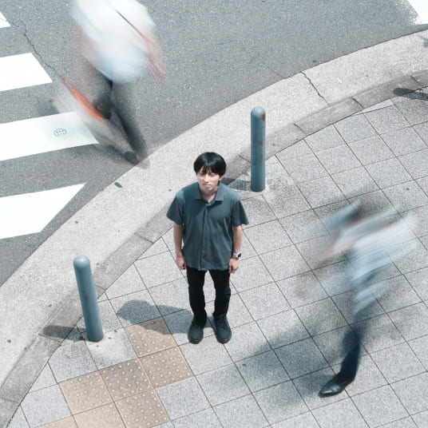 Designer大沢 ゆらぎ栃木県宇都宮市生まれ、群馬県育ち。
上京後は板橋区に住んでいました。
もともと作曲家を目指していましたが、幼少期からのあこがれであったデザイナーになるべく、セルインタラクティブに参加しました。 -
Designer大坪 愛実
大分県大分市生まれ、神奈川県横浜市育ち。
多摩美術大学 演劇舞踊デザイン学科卒
東京デザインプレックス研究所 デジタルコミュニケーションデザイン専攻 修了大学時代は舞台美術・映像美術を中心に、アートの領域を専攻していました。
デザインの領域に転向した際に強く感じた、
「クリエィティブの力で、コミュニケーションが生まれるものを提供したい」
という思いを大切に、何事にも丁寧に応えていきたいです。 -
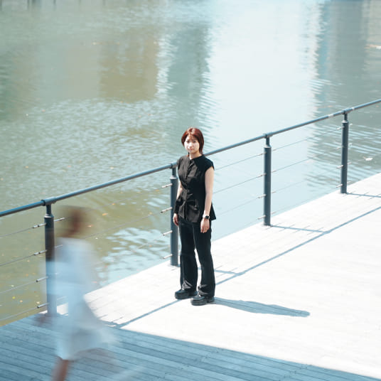 Lead Designer神部 美波ものづくりと人が喜ぶことを考えるのが好きでデザイナーになりました。
デザインは可能性に満ちています。
働き続ける社会に新しい価値を届けるために、
人やモノが持っている魅力を最大限に引き出せるよう、
想像と学びを絶やすことなく大切にしていきたいです。クリエイティブの力で、目的という未来に向けてみなさんがワクワクできるよう、ともに歩んでいけたらと思います。
-
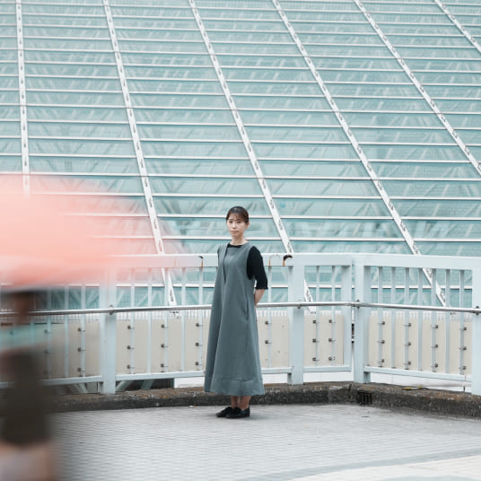 Designer菅野 唯1989年生まれ
幼い頃から美術や服飾に関心があり、「何かをつくる人」になりたいと漠然と思ってきました。
学生時代はグラフィック、プロダクト、服飾の分野に触れ、
セルディビジョンに入社、その後セルインタラクティブの社員となり現在に至ります。これまではデジタル関係のお仕事の他、企業ブランディング、刊行物のデザインや編集等、デザインにおいて様々な領域に携わってまいりました。
皆さまには、視野や可能性を広げることができるような、
頼っていただけるパートナーでありたいと思っています。
お客さまが、それぞれの大切な局面で、私たちに任せてくださることに感謝を忘れず、当たり前ですが丁寧に応えていきたいと思います。 -
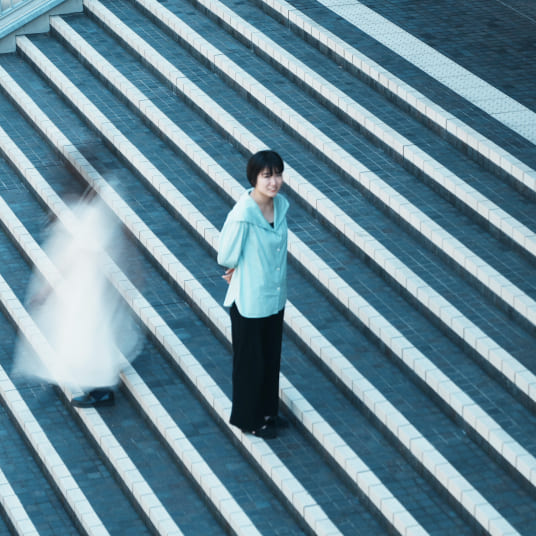 Designer山田 梨乃東京都出身。
大学ではテキスタイルデザインを専攻していました。幸せや、愛着、誇りを感じてもらえるようなクリエイティブを目指しています。
趣味は旅行、愛猫を撫でること、牡蠣料理を食べること。 -
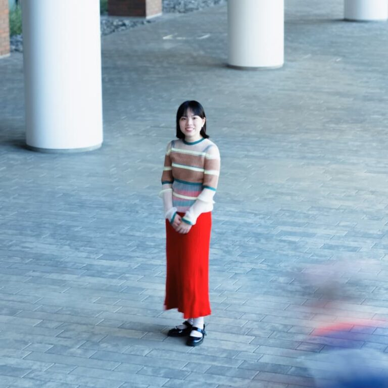 Art Director松田 柊子岩手県雫石町出身
桑沢デザイン研究所卒幼い頃から絵を描くことが好きで、
誰かに作ったものを届ける職業がしたいと思い、今に至ります。楽しいこと、新しいことが大好きです。
新しいことにワクワクしながら、
思いをかたちづくるブランディングの考えをベースに
人と人の間をつなげるコミュニケーションを作っていきたいです。 -
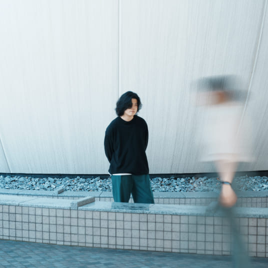 Developer梶田 昇冶愛知県で生まれ、愛知県で育つ。
前職は美容師をしていました。
デジタルが与える可能性や感動に感化されデジタル業界へ。時代の流れの先にある可能性を想像し、
何を学び、提供できるかを考えています。クリエイティブを通して、
みなさんが伝えたい思いや、新たな価値を
インタラクティブに表現をして
感動を届けていけたらと思います。 -
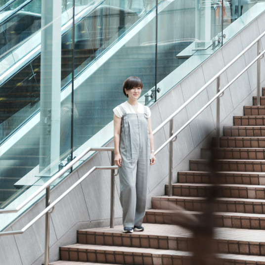 Designer廣茂 久美子幼い頃から頭の中のものを
目にみえる形にすることが好きで、
心がどのように作られていくか興味を持ち、
心理学を学んだ後、
グラフィック・３DCGアニメーション・webを通して
デザイナーをしてきました。
人が考えているものを目に見えるようにし、
それを見て何を感じるかという仕事に夢中になって、
今に至ります。
日常に潜んでいる学びを見つけて
年を重ねていく成長を楽しみ、
一緒に何かを作っていくワクワクを感じ、
自由な想像力を形にできたらと思います。 -
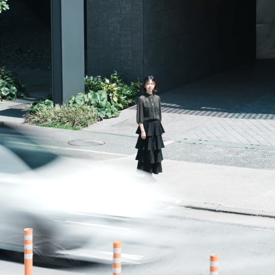 Designer近藤 愛里花横浜生まれ、横浜育ち。
多摩美術大学 情報デザイン学科メディア芸術コース卒。幼い頃から常にワクワクする方角に向かって歩き、
大学時代では、見つけたワクワクを映像に吹き込んでいました。
これからは、みなさんと一緒にワクワクを見つけ出し、たくさんの方にお届けられたらと思っています。